Sistema de Gestión
de Turnos Médicos
Presentación Final · Junio 2026
Roles y Actividades
- Definió los requerimientos funcionales y no funcionales
- Priorizó el backlog
- Validó criterios de aceptación
- Representó la visión del cliente
- Coordinó sprints y entregas
- Gestionó riesgos y dependencias
- Facilitó ceremonias del equipo
- Hizo seguimiento del avance
- Automatizó tests E2E con Selenium
- Ejecutó pruebas funcionales de UI
- Documentó evidencia de ejecución
- Registró defectos hallados
- Diseñó casos de prueba (RF + RNF)
- Probó la API con Postman
- Ejecutó carga con JMeter
- Mantuvo trazabilidad y registro de defectos
- Desarrolló el backend con FastAPI
- Implementó autenticación JWT y roles
- Construyó el frontend en React
- Mantuvo el mock-data y la API
La Aplicación


Arquitectura
Sistema full-stack con separación de capas y API REST. El backend real fue el sistema bajo prueba.
Requerimientos: Funcionales + No Funcionales
Plan de Pruebas


Criterio de salida: casos críticos en PASA · RNF de seguridad y rendimiento ejecutados · defectos de severidad alta resueltos o documentados con decisión del equipo · evidencia adjunta.
Vistas del sistema
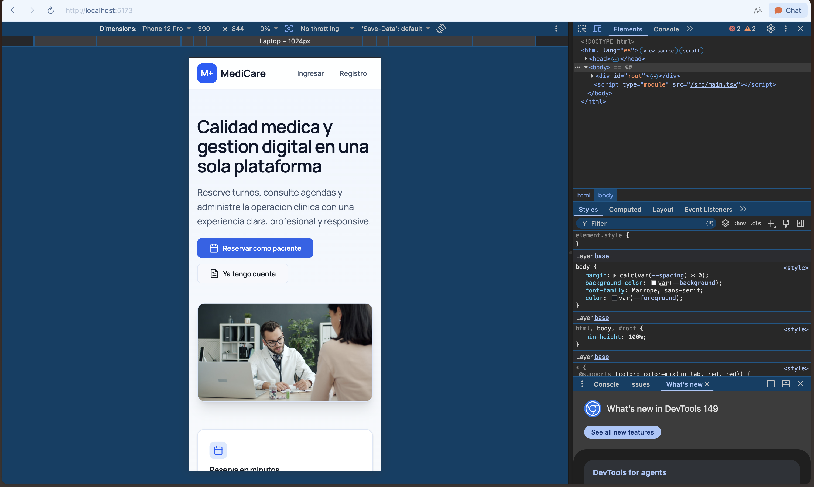
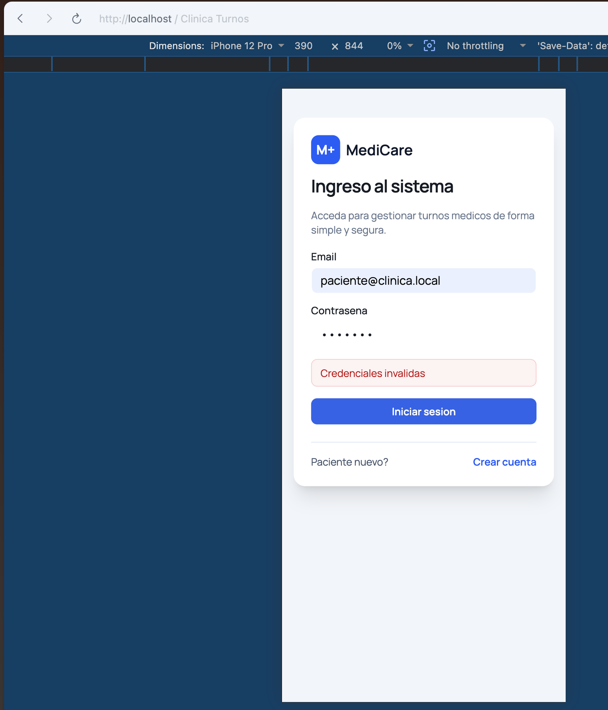
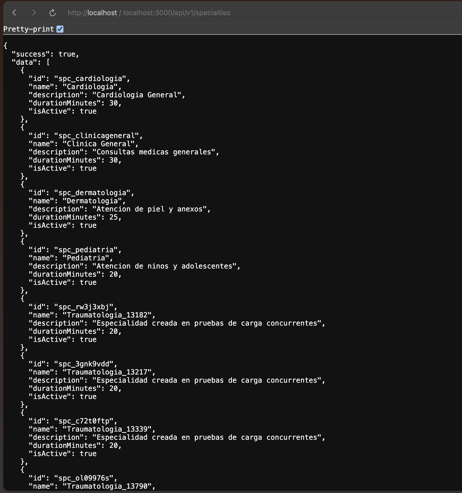
Casos de Prueba
| ID | Nombre | Módulo | Estado |
|---|---|---|---|
| CP-001 | Login por rol paciente | Autenticación | Pasó |
| CP-002 | Login por rol médico | Autenticación | Pasó |
| CP-003 | Login por rol admin | Autenticación | Pasó |
| CP-004 | Validación de credenciales | Autenticación | Pasó |
| CP-005 | Registro de pacientes | Registro | Falló |
| CP-007 | Edición del perfil | Perfil | Pasó |
| CP-009 | Reserva de turno exitoso | Turnos / Reserva | Falló |
| CP-010 | Reserva con fecha pasada | Turnos / Reserva | Falló |
| CP-011 | Cancelación desde panel | Turnos / Gestión | Falló |
| CP-013 | Turnos asignados al médico | Médico / Agenda | Pasó |
| CP-014 | Confirmar turno pendiente | Médico / Agenda | Pasó |
| CP-016 | Dashboard administrativo | Admin / Dashboard | Pasó |
| ID | Nombre | Herramienta | Estado |
|---|---|---|---|
| CP-RNF-01 | Contraseñas seguras (bcrypt) | Manual / revisión | Falla |
| CP-RNF-02 | Endpoints privados con JWT | Postman | Pasa |
| CP-RNF-03 | Control de acceso por roles | Postman | Pasa |
| CP-RNF-04 | Cabeceras de seguridad HTTP | Manual / curl | Falla |
| CP-RNF-05 | Rechazo de campos desconocidos | Postman | Falla |
| CP-RNF-06 | No exponer info interna en errores | Postman | Pasa |
| CP-RNF-07 | Carga y concurrencia (JMeter) | JMeter | Pasa |
| CP-RNF-08 | Diseño responsivo | DevTools | Pasa |
| CP-RNF-09 | Mensajes de alerta del frontend | Manual | Pasa |
Cada caso documenta precondición, pasos, datos de entrada, resultado esperado y resultado obtenido. 27 casos en total.
Pruebas funcionales de la API — Postman
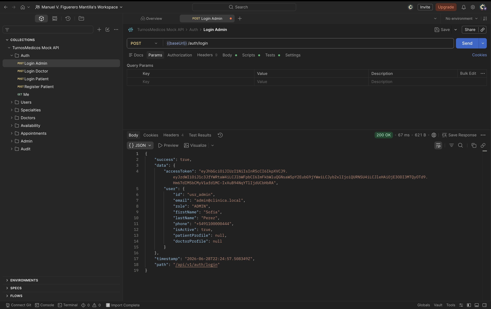
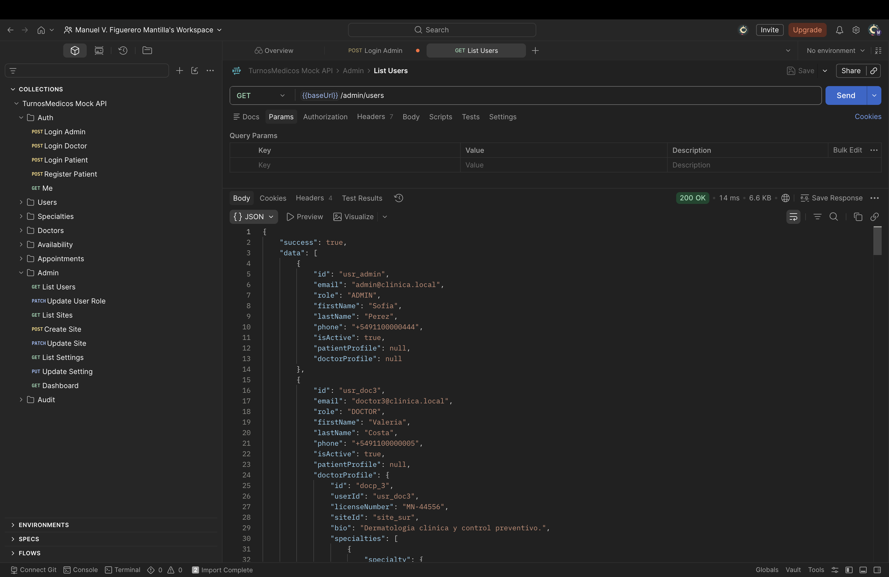
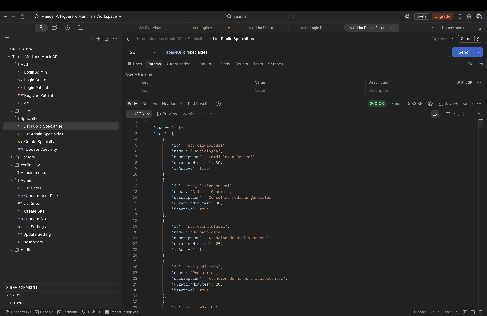
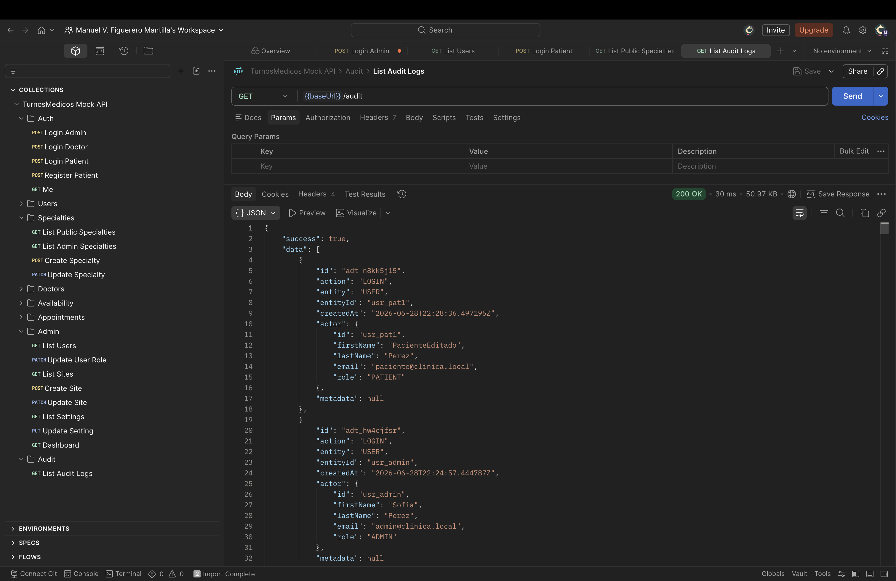
Colección TurnosMedicos Mock API: Auth · Users · Specialties · Doctors · Availability · Appointments · Admin · Audit — 24+ requests verificadas.
Pruebas de Seguridad — control de acceso
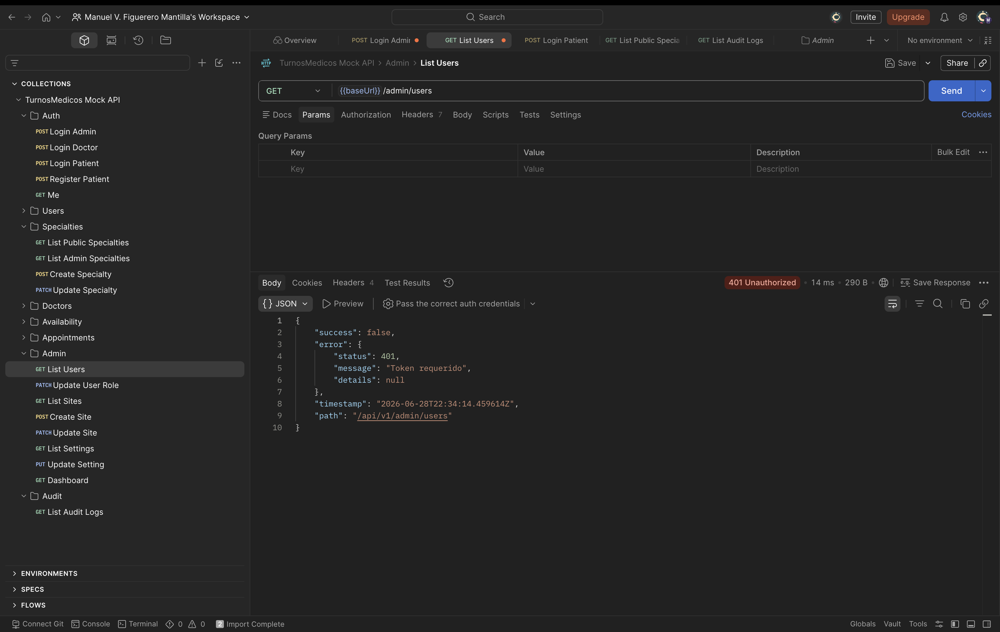
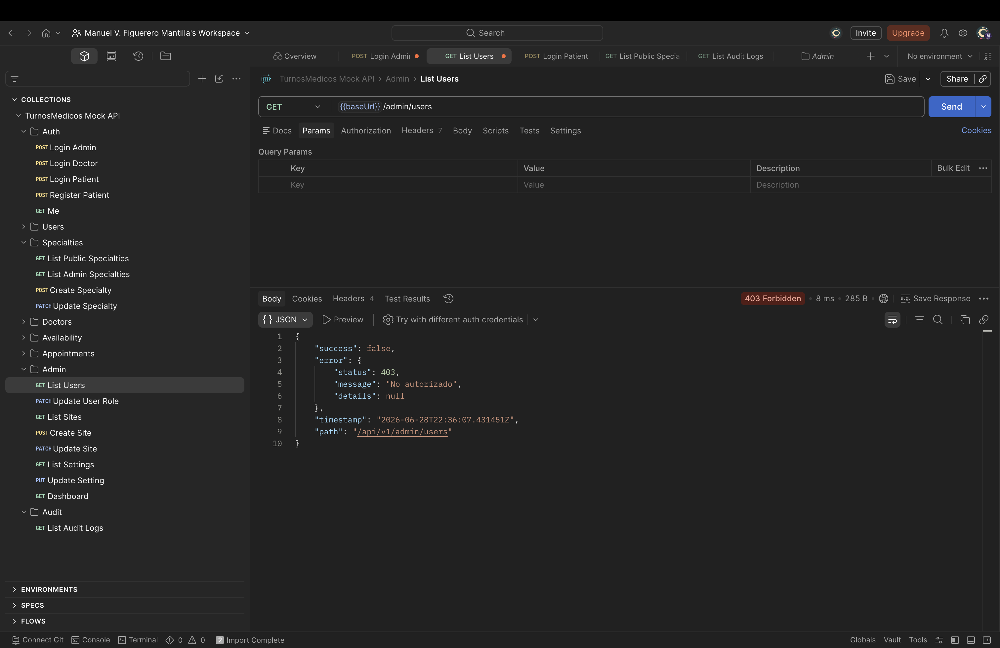
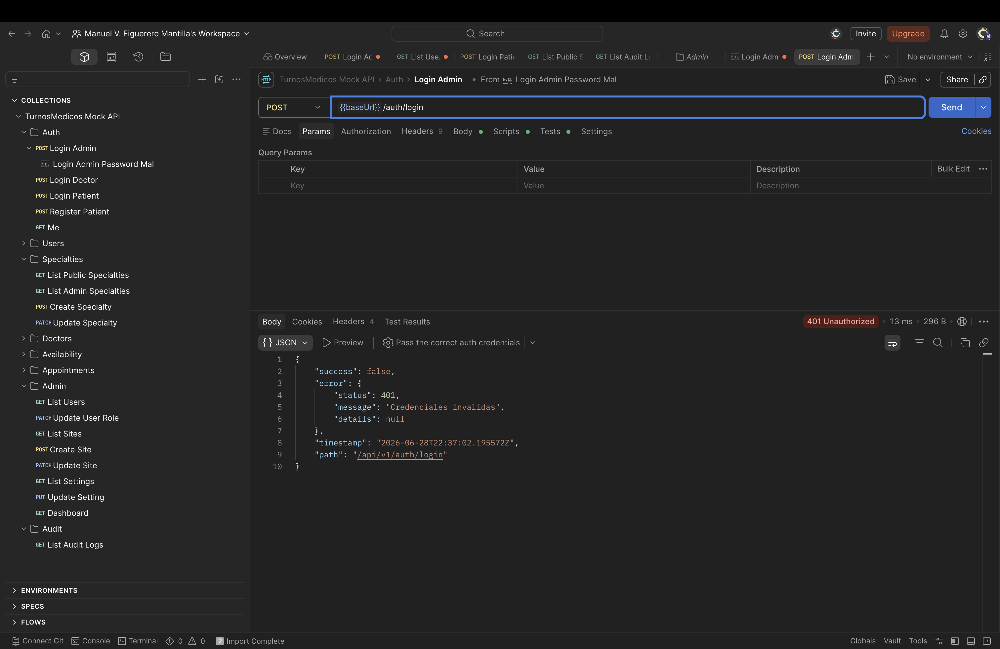
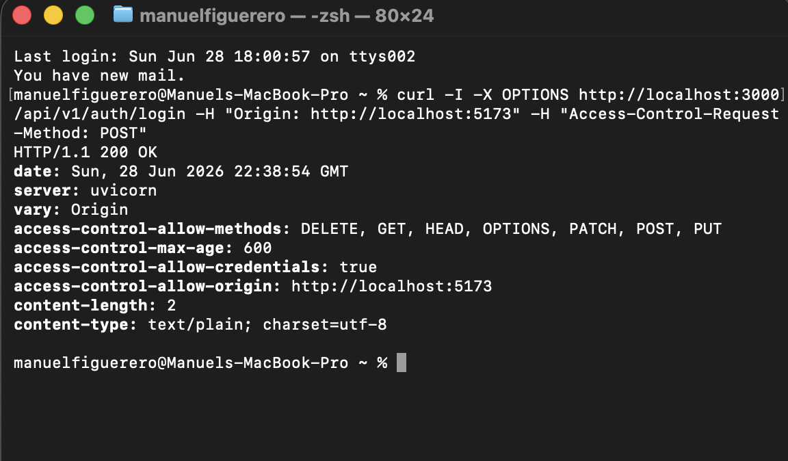
El control de acceso por JWT y roles funciona correctamente: rechaza sin token (401), rechaza rol incorrecto (403) y no filtra información interna en los errores.
Pruebas de Carga — Estrategia JMeter
| Escenario | Endpoint | Hilos | Estado |
|---|---|---|---|
| E1 — Login masivo | POST /auth/login | 50 | PASA |
| E2 — Flujo con token | GET /appointments/my | token | PASA |
| E3 — Seguridad | sin token / pass mal | — | PASA |
| E4 — Consulta de turnos | GET /appointments/my | 100 | FALLA |
| E5 — Reservas simultáneas | POST /appointments/reserve | 20 | FALLA |
| E6 — Especialidades | CRUD admin | — | PEND. |
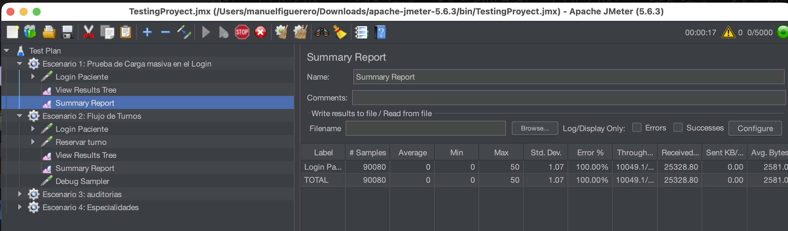
/specialties antes de cada corrida.Resultados de Performance
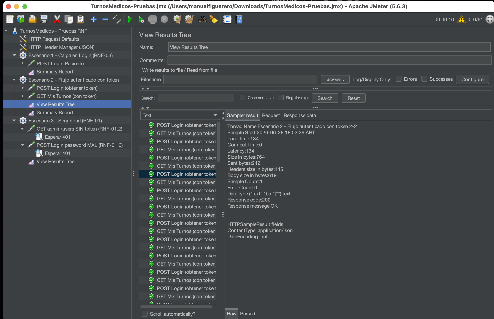
Matriz de Trazabilidad (RNF)
Vincula cada requisito no funcional con su caso, herramienta, tipo y resultado. Asegura cobertura y hace visibles los gaps.
| ID | Requisito | Herramienta | Resultado |
|---|---|---|---|
| RNF-01.1 | Contraseñas hasheadas con bcrypt | Revisión de código | ✗ Texto plano |
| RNF-01.2/.3 | JWT válido · control de acceso por roles | Postman / JMeter | ✓ Cumple |
| RNF-01.4 | Cabeceras de seguridad HTTP | curl / revisión | ✗ Ausentes |
| RNF-01.5 | Rechazar campos desconocidos (422) | Postman | ✗ Da 200 |
| RNF-03.1 | Concurrencia sin degradación | JMeter | ✓ 0% error |
| RNF-04.1/.2 | Responsive · mensajes claros | Manual / DevTools | ✓ Cumple |
| RNF-05/06/07 | Auditoría · CORS/JSON · .env | Postman / revisión | ✓ Cumple |
Defectos detectados
Severidad = impacto técnico · Prioridad = urgencia. DEF-01 es alta porque expone datos sensibles de pacientes.
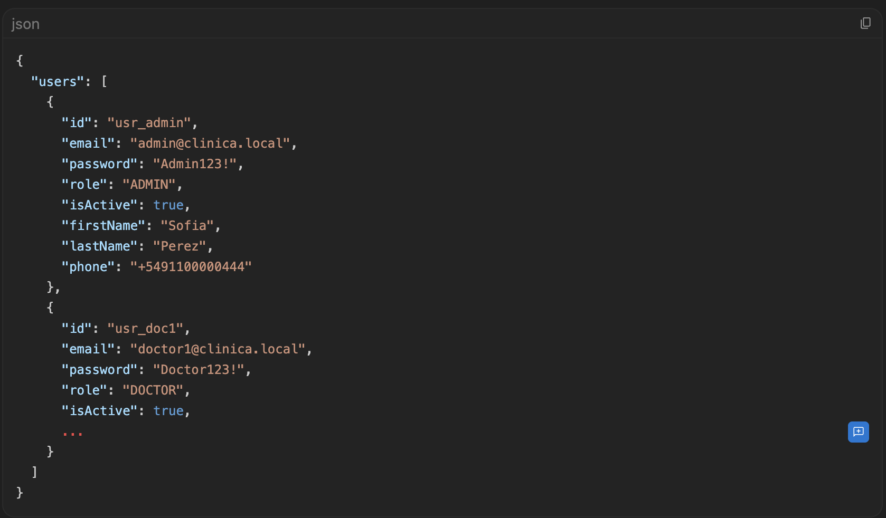
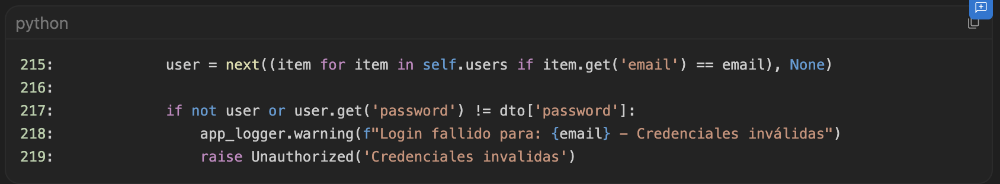
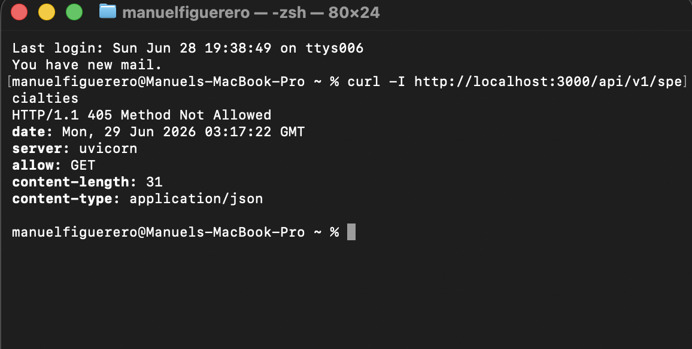
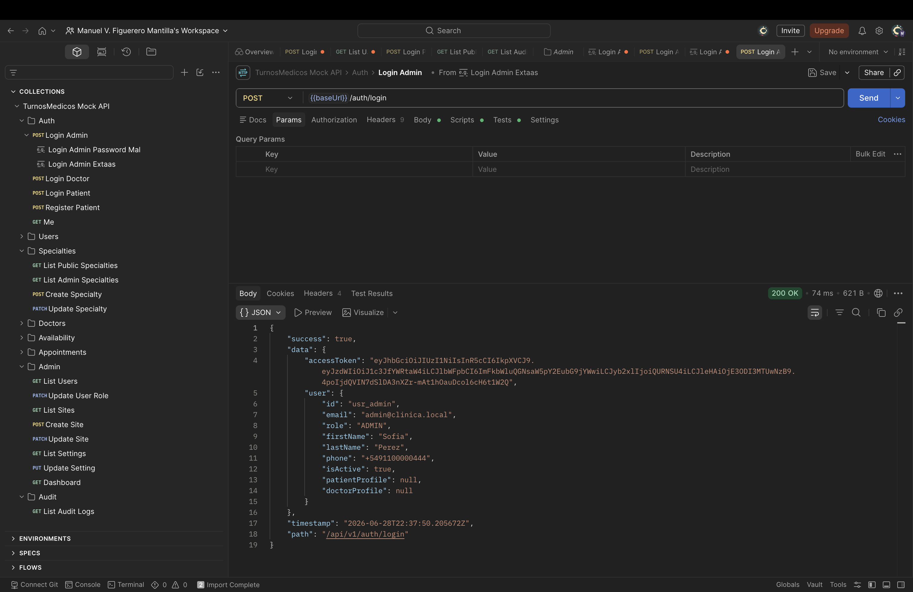